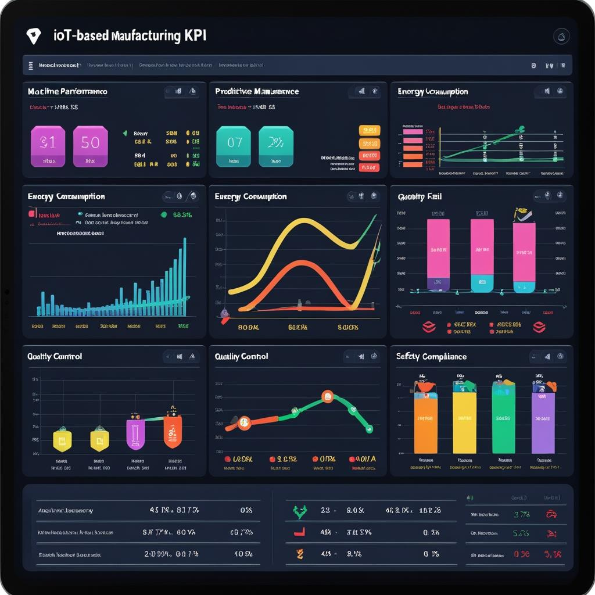

IoT-Powered KPI Dashboard
Gain complete visibility into your operations with our IoT-powered dashboard that transforms real-time sensor data into actionable business intelligence. Designed to monitor leading KPIs, it helps you optimize resource usage, improve efficiency, and make data-driven decisions for smarter growth.
Key Features
- Real-time data collection from IoT sensors across assets and processes
- Dynamic dashboards tailored to business-critical KPIs
- Predictive analytics to identify trends and prevent downtime
- Remote access from desktop, mobile, or tablet
- Custom alerts and notifications to act fast on anomalies
- Cloud-based data storage with secure encryption
- Easy integration with ERP, SCADA, and legacy systems
- User-friendly interface for teams at all levels
Applications
- Manufacturing plants: Monitor production KPIs, energy use, and downtime
- Facility management: Track HVAC, lighting, and environmental conditions
- Water & waste management: Real-time flow, quality, and leak detection
- Smart cities: Traffic, pollution, utility usage dashboards
- Supply chain monitoring: Track assets, inventory levels, and logistics KPIs
Key Benefits of E&E Smart Solutions
Our IoT-powered dashboard empowers organizations to maximize efficiency, reduce operational costs, and make proactive decisions based on real data. From predictive maintenance to sustainability insights, it transforms your data into a competitive advantage.
- Industry-leading sensor technology for accurate real-time monitoring
- Powerful analytics & visualization tools to drive smart decisions
- Seamless integration into existing IT & OT infrastructure
